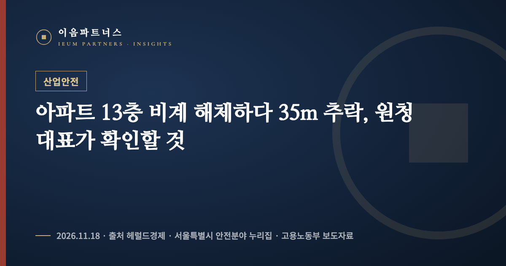

아파트 13층 비계 해체하다 35m 추락, 원청 대표가 확인할 것

건물 외벽에 세운 비계(높은 곳 작업을 위해 임시로 설치하는 발판 구조물)는 공사 막바지에 해체됩니다. 2026년 11월 18일 서울 마포의 아파트 재건축 현장에서 이 비계를 해체하던 하청 노동자가 13층 높이에서 떨어져 숨졌습니다. 이 글에서는 사고 내용과 비계 해체 때 필요한 안전조치, 원청 경영책임자가 확인할 점을 정리합니다.
노동당국은 하청업체뿐 아니라 원청의 안전보건관리체계까지 살펴보겠다고 밝혔습니다. 공사를 발주하거나 도급을 주는 회사라면 우리 회사의 관리 체계를 카카오톡 채널 이음파트너스에서 함께 점검해 볼 수 있습니다.
무슨 일이 있었나
고용노동부에 따르면 사고는 2026년 11월 18일 오전 8시 52분께 서울 마포구의 아파트 재건축 공사 현장에서 일어났습니다. 원청의 수급업체 소속 36세 노동자가 건물 13층 외부에서 시스템비계를 해체하던 중 약 35m 아래로 떨어져 숨졌습니다(헤럴드경제).
고용노동부 서울서부지청은 현장에 출동해 사고조사에 착수하고 작업중지 조치를 내렸습니다. 노동당국은 추락방지 조치가 적절했는지와 함께 “비계 해체 작업 과정에서 산업안전보건법상 안전수칙이 준수됐는지” 등을 조사할 방침입니다(헤럴드경제).
비계 해체, 무엇을 지켜야 하나
비계는 해체 과정에서 추락 위험이 생길 수 있어 안전난간과 추락방호망 같은 안전시설 설치, 보호구 착용 등 안전조치가 요구됩니다. 발판과 난간을 하나씩 떼어 내면서 작업자를 보호하던 시설도 함께 줄어들기 때문에, 정해진 해체 순서를 지키고 안전대를 걸 곳을 끝까지 남겨 두는 것이 중요합니다.
원청에도 책임을 묻습니다
노동당국은 원청 사업장의 안전보건관리체계 구축과 이행 여부도 확인해 중대재해처벌법 위반 여부를 수사할 예정입니다. 중대재해처벌법은 상시근로자 5인 이상 사업장에서 중대산업재해가 생기면 사업주나 경영책임자가 안전보건 확보 의무를 어겼는지 따져 형사책임을 묻습니다(헤럴드경제).
사망 사고에서 경영책임자는 1년 이상의 징역 또는 10억 원 이하의 벌금을, 법인은 50억 원 이하의 벌금을 받을 수 있습니다(서울특별시 안전분야 누리집). 2027년 4월 28일부터는 하청 노동자도 원청에 직접 작업중지를 요구할 수 있게 됩니다(고용노동부 보도자료).
대표님이 지금 확인할 것
- 비계 설치·해체 작업에 작업계획과 해체 순서가 정해져 있는지
- 해체 중에도 안전난간·추락방호망이 남아 있도록 순서를 짰는지, 안전대를 걸 곳이 있는지
- 하청 작업이라도 원청으로서 안전조치 이행을 확인하고 기록을 남기는지
- 하청 노동자가 위험을 알렸을 때 바로 작업을 멈출 수 있는 절차가 있는지
참고한 자료
- 한화 아파트 재건축 현장서 30대 하청노동자 추락사…35m 아래로 떨어져 — 헤럴드경제 (2026.11.18)
- 중대재해처벌법 처벌내용 — 서울특별시 안전분야 누리집 (2026.04.03)
- 노사정이 함께 만드는 안전한 일터 구축을 위한 제도적 기반 -산업안전보건법 개정·공포- — 고용노동부 보도자료 (2026.10.27)
도급·하청 구조에서 원청이 챙겨야 할 안전보건 관리 체계가 궁금하시다면 카카오톡 채널 이음파트너스로 문의해 주세요.
※ 이 글은 일반적인 정보 제공을 위한 것으로, 개별 사안은 세무사·노무사 등 전문가와 함께 확인하시기 바랍니다.